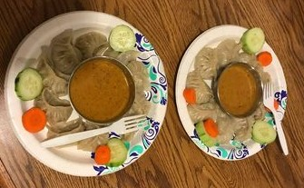

Facts About Bina |
|---|


Bina was born in Nepal and moved to USA in 2014 where she developed an interest in shopping. This interest lead her to make a purchase in a good time and at a good price.
Facts About Bina |
|---|
If you like to know Bina... |
|---|
Bina was born at Biratnagar, Nepal in 1984. She was born as a second daughter in Khatiwada family. Bina went to school to Bhrikuti Model in Urlabari and she got vocational training education in Health sector. She served to the public almost 10 years. She acted in a role of a counselor and nurse.Marie Stopes was the organization where she served in eastern Nepal. It was related to the family planning and birth control.She had completed the nursing education. To care the patients was her hobby. She started her career in 2003 until she moved to USA in 2014. In spite of job , kids and family; Bina likes to continue her education. After the birth of our little one; Bina was suffered from post-partam eclampsia. She was admitted to hospital upto 13 days to be cured. She is worried about situations that make us fail. She always plan in advance to get success. She always takes others problems as her own problem and tries to solve it as soon as possible.